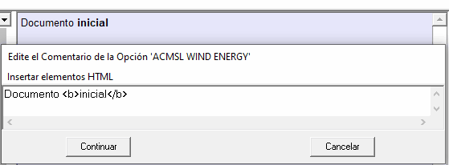
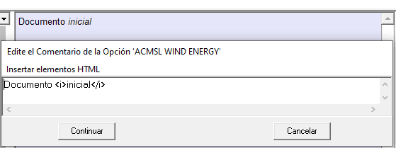
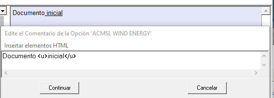

El procedimiento para cambiar una parte del texto a negrita, cursiva o subrayado es similar al descrito en "Insertar un nuevo párrafo".
- Texto en negrita.
Párrafo <b>primero</b>, ... |
Párrafo primero, ... |
Menú "Agregar texto en negrita" |
Ejemplo:

- Texto en cursiva
Párrafo <i>primero</i>, ... |
Párrafo primero, ... |
Menú "Agregar texto en cursiva" |
Ejemplo:

- Texto subrayado.
Párrafo <u>primero</u>, ... |
Párrafo primero, ... |
Menú "Agregar texto subrayado" |
Ejemplo:
